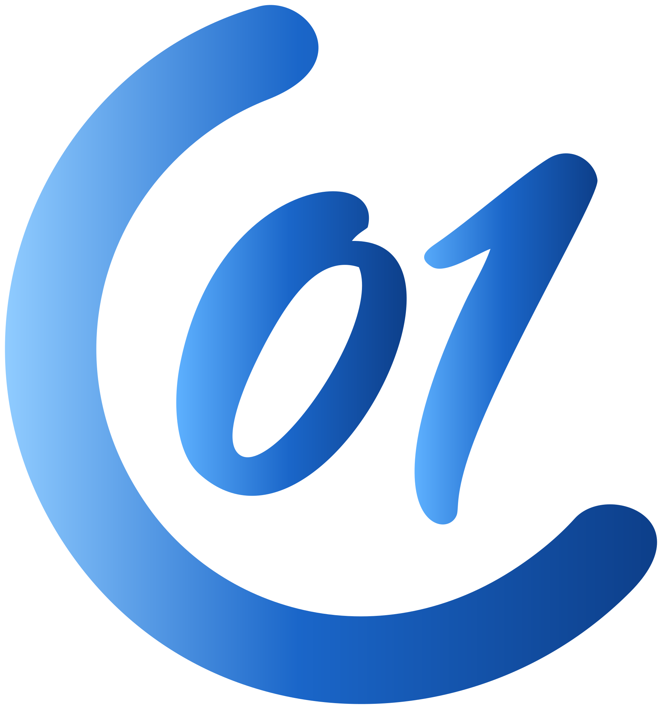
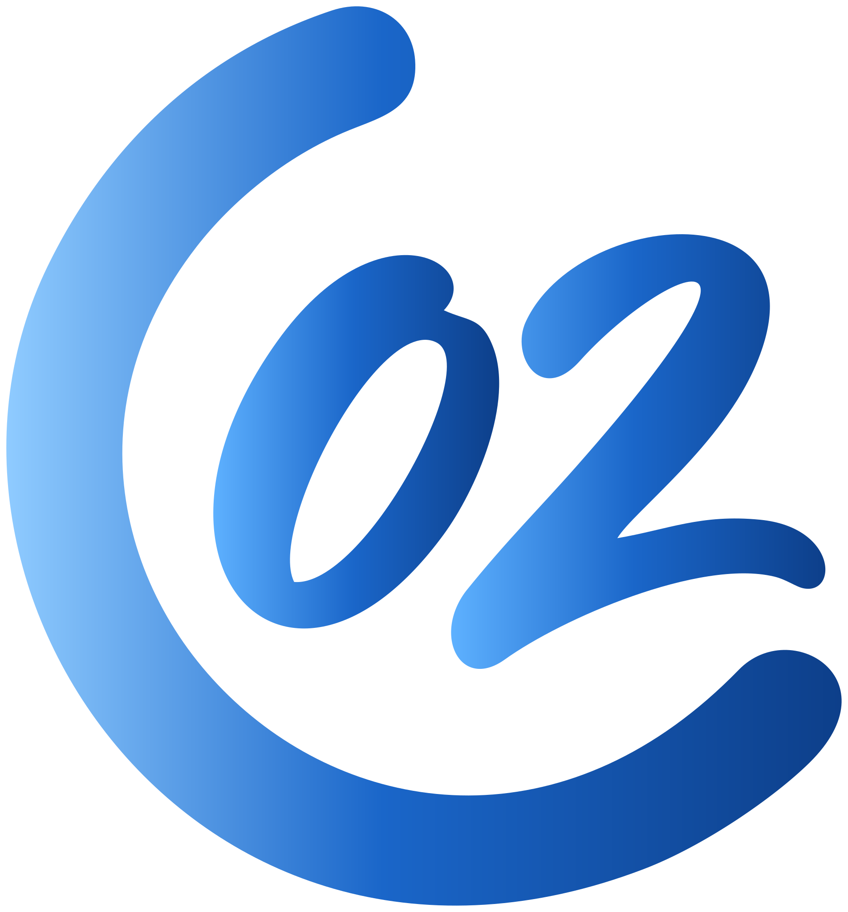
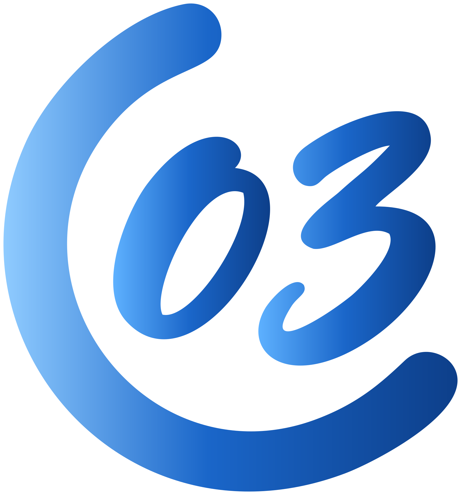
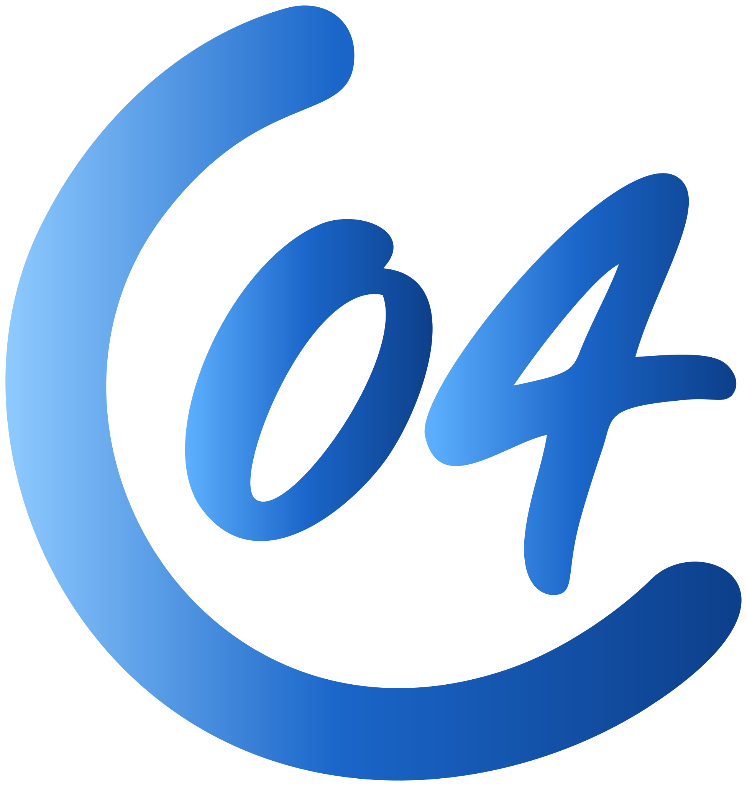

Fotos sem feed.
Uma landing page com acesso por código para entregar as fotos do Unoesc Day sem expor alunos menores de idade.
- Meu papel
- Design completo da landing page: UX, UI e direção visual
- Equipe
- LIGA Acadêmica de Design, Unoesc
- Desenvolvimento
- Lucas Moreira
- Fotografia
- Geise Moreira
o desafio
Um estúdio de fotos cheio de menores de idade.
No Unoesc Day, a LIGA Acadêmica de Design montou um estúdio de fotos para se aproximar dos estudantes. Mas boa parte do público era menor de idade, e publicar as fotos num feed aberto violaria o ECA Digital.
como eu pensei
-
Problema
Muitos alunos no evento eram menores de idade. Um feed aberto exporia a imagem deles.
-
Pergunta
Como entregar a foto de cada aluno sem mostrá-la para mais ninguém?
-
Decisão
Uma landing page que apresenta o curso e, no final, leva a um acesso restrito por código.
como funciona
Do clique da foto ao celular do aluno.

A foto
O aluno é fotografado no estúdio da LIGA.

O código
Ali mesmo, ele recebe um código individual.

O site
Ele conhece o curso de Design na landing page.

As fotos
Com o código, vê só as próprias fotos. Nada de feed público.
cada detalhe pensado
Feito para usar com pressa, no meio do evento.
Ergonomia
Botões grandes e poucos cliques
Quem acessa está de pé, no meio de um evento, com pressa.
Mobile-first
Primeiro o toque, depois o desktop
O celular é onde o aluno abre o link. A tela grande veio depois.
Acessibilidade
Contraste aprovado no WCAG AA
Testei as cores no padrão internacional de acessibilidade.
o resultado
Cada foto chegou só a quem é dono dela.
- sessões de fotografia
- 120
- fotos entregues com segurança
- 2.970
- fotos expostas publicamente
- 0
o número que mais me orgulha